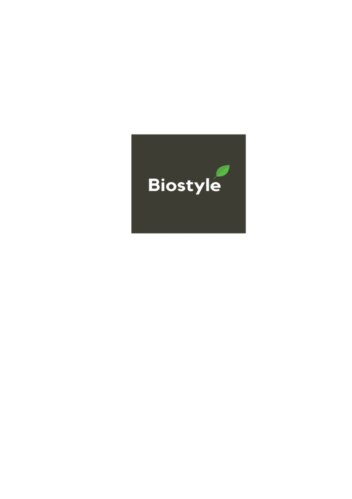
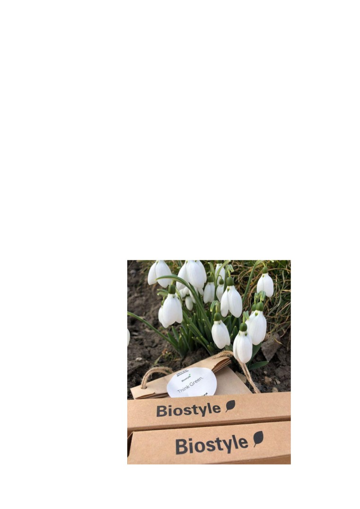

Tânărul de 16 ani, care a reușit să-și deschidă
o afacere: “vârsta este doar un număr”
Povestea de succes a lui Natanael Marian, elevul care s-a făcut
antreprenor si a spart tiparele cu micul său bussines “Biostyle” pe piața
din Republica Moldova din anul 2017. Visul lui de a înființa o afacere
care ar putea influența și schimba viziunile oamenilor, a devenit
realitate.
Cei care vor să-și facă un cadou surpriză sau să le trimită un colet
inedit celor apropiați, pot să apeleze la unul din cei mai tineri afaceriști
din Chișinău. Natanael și-a deschis o afacere cu articole eco și poate
trimite colete în toată țara. Studentul care și-a deschis afacerea la 16 ani
ne va da cărțile pe față.
Natanael Marian are 19 ani și este student la Academia de Studii
Economice din Bucuresti. Fiind tânăr în dezvoltare a încercat de toate -
să activeze ca voluntar, să lucreze pentru alții, pentru a avea banii proprii,
ba chiar și să participe la orice tip de traininguri, încercând să descopere
ce i-ar plăcea să facă cu adevărat.
De aceea, am vrut să aflăm mai multe despre tot procesul care a stat
la baza transformării unei ideii geniale într-un adevărat câștig zilnic, ba
chiar a avut un efect pozitiv asupra populației de a reduce elementele
nocive care poluează planeta. Așa că, am stat de vorbă cu Natanael Marian
și l-am descusut puțin câte puțin despre concepțiile despre magazin din
capul lui, greutățile întâlnite pe parcursul dezvoltării afacerii, susținerea
părinților la început de cale, dar și despre mijloacele financiare în
contextul în care el era încă elev.
- Când și în ce mod i-a venit gândul de a deschide o afacere pe
cont propriu, la vârsta lui atât de fragedă?
- Vârsta e doar un număr, nu cred că aceste cifre ar trebui sa ne
limiteze în realizarea ideilor. Eu nu am urmărit niciun principiu,
aveam 15 ani și mă simțeam stânjenitor să mai iau bani de la
părinți pentru distracțiile mele, am simțit că e momentul să
schimb ceva, am trecut cu brio peste un curs de start-up pentru a
putea lansa propria afacere. În vara anului 2017, am deschis
propriul magazin online și o pagină de Instagram cu produse eco
în vânzare.
Produsele bio nu prea se promovau în anii anteriori, iar ideea lui
Nati de a lansa o afacere în mediul online cu aceste articole era una
inovativă, profitabilă pe piața din Republica Moldova.
-
De ce ai ales vânzarea produselor bio?
-
Intenția de comercializare a acestora este destul de actuală în
prezent, dar și în viitor , în contextul poluării masive a Planetei,
fiecare din noi va avea nevoie pentru a menține mediul ce ne
înconjoară curat. Din acest motiv și magazinul are numele de
“biostyle” ce ar sugera protejarea vieții de pe Terra.
-
Crezi că potențialii clienți procură din magazinul tău pentru
ca să reducă deșeurile poluante sau sunt atrași de publicitate,
prețuri?
-
Nu cred, ba chiar sunt sigur că clienții care procură de pe site-ul
web produse, sunt conștienți și responsabili pentru mediul în care
trăiesc. Iar prețul sau publicitatea nu ar avea atât de mare valoare
pentru ei, acestea mai mult i-ar influența să ia o decizie bună.
-
De unde ai resurse financiare, pentru că e evident că e nevoie
de o investiție mult mai mare?
-
-Am avut destule resurse agonisite de la vârsta de 10 ani - am
colindat, am ajutat vecinii cu treburile casnice , am lucrat part-
time. Când am deschis afacerea, au apărut mai multe probleme,
m-am și gândit să iau un credit, dar ne-am descurcat cu resursele
proprii, mai apoi magazinul aducea și un venit, iar banii din nou
se investeau, sunt mulțumit, în acest moment avem doar profit.

- Și cum au reacționat parinții tăi la tot planul cu afacerea.
Întrucât nu întâlnim deseori astfel de cazuri când copiii decid
să-și întreacă propriile limite?
- m-au susținut mereu, nu mi-au tăiat aripile de a visa și mi-au zis
în caz că voi avea nevoie, mă vor ajuta financiar, dar m-au rugat
să nu mă apuc în caz că nu voi putea combina școala cu munca,
pentru că cum îmi spuse mama “atunci când se dezvoltă afacerea
e nevoie de un lider cu cunoștințe care să-i îndrume pe ceilalți”.
Știind că are afacerea în Republica Moldova, și în același timp este
student , cu un mare interes îl interoghez:
- Cum se descurcă cu studiile la universitate, pentru că acum
în contextul pandemiei este mai dificil să te acomodezi?
- Studiez la Academia de Studii Economice din Bucuresti,
facultatea Administrarea afacerilor cu predare în limbi străine, în
format online, dar oricum în caz că sunt schimbări spontane am
angajat un manager bine instruit care are grijă să-i coordoneaze
pe colegii care m-au ajutat la îndeplinirea comenzilor de la bun
început.
- Ce le doriți adolescenților care vor să calce pe treptele
succesului?
Tânărul antreprenor, încurajează orice individ, dornic de a porni
propriul său business.
- Cei care consideră că au spirit de antreprenor, e bine să încerce
să-și dezvolte imaginația și să-și pună în practică ideile,
părerile. La început va fi greu, dar rezultatul merită efortul ca
și în expresia „Prin greutăți spre stele”. Nici mie nu mi-a fost
ușor, dar am fost încurajat întotdeauna de familie, care m-au
sfătuit să încerc, am încercat și iată rezultatele, am un magazin
bine pus pe roate, am cunoscut oameni mulți, am clienți fideli,
am siguranța zilei de mâine și am o carieră de care sunt
mândru.
Natanael Marian este de părere că tinerii ar trebui să muncească de
la vârsta de 16 ani, astfel ei vor căpăta experiență și vor învăța ce înseamnă
să fii responsabil.
Magazinul lui activeaza în sfera vânzărilor de produse bio, iar pentru
a dezvolta afacerea a procurat câteva aparate pentru gravarea periuțelor
de dinți
pieptenilor pentru a avea fiecare client o lucrare
inedită,personalizată , se mai ocupă cu distribuirea prafului de dinți,
săpunurilor naturale și pungilor din bumbac. Pagina lui a crescut radical
în ultima perioadă pentru că s-a intensificat shoppingul online , un avantaj
pentru afacerea lui pe timp de pandemie. Scopul final este extinderea site-
lui pe piața din România și deschiderea câtorva magazine .